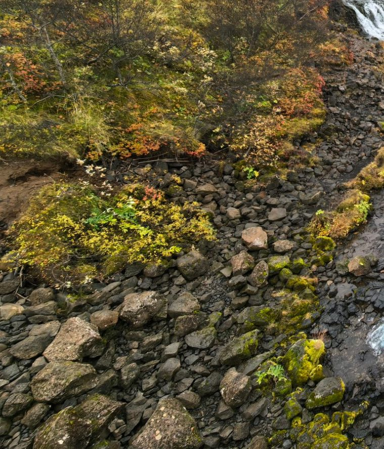
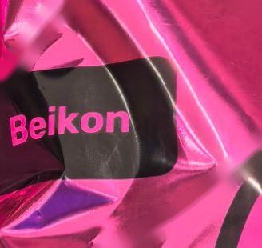
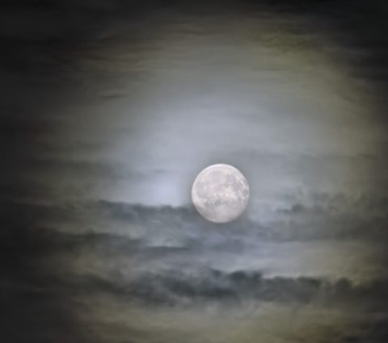
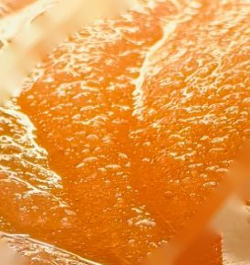
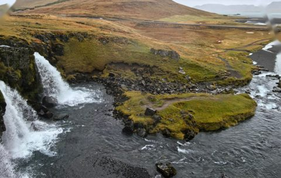
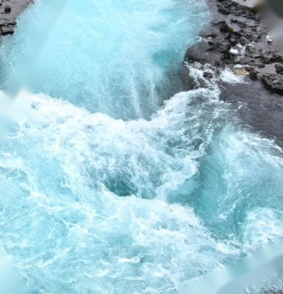

Agent·回归
回归跑完38 条旅程全过
Mate 70 Pro 真机已释放，排队的 Agent·调优 接着用。
每张参考图先做成一张卡片：内容都一样，只换配色和质感，放在一起比。以后挑出有意思的，再往按钮、面板、背景这些形式上发展。
鼠标移到卡片上，光会跟着走，塑料膜和冰沙最明显。云、雾和水会慢慢动。
Mate 70 Pro 真机已释放，排队的 Agent·调优 接着用。

苹果式毛玻璃：底下的照片被模糊、提了饱和，卡片自己只加一层浅色染色和一圈亮边。完整实验台在 explore/glass。
Mate 70 Pro 真机已释放，排队的 Agent·调优 接着用。

零食袋的铝膜：反光很硬、有折痕，褶子里偏紫；黑色标签印在膜上，高光从字上扫过去。鼠标移动相当于转动袋子。
Mate 70 Pro 真机已释放，排队的 Agent·调优 接着用。

满月透过薄云：中间一团冷白的光，往外一圈淡黄、再外一圈发紫；离月亮近的云带银边。主按钮也带一圈晕。
Mate 70 Pro 真机已释放，排队的 Agent·调优 接着用。
哈尔格林姆斯教堂的黄昏：混凝土的灰里带一点紫，竖向柱子一格格往外降；天是蓝调时刻的蓝，窗口和钟面是暖黄的灯。
Mate 70 Pro 真机已释放，排队的 Agent·调优 接着用。

冰沙表面：橙红的底从里面透亮，细碎的冰晶一颗颗反光，挖过的地方留下一道有光泽的弧；配色里加了椰子片的奶白。
Mate 70 Pro 真机已释放，排队的 Agent·调优 接着用。

冰岛苔原：山体的土黄、赭石一层层横着叠，草有纤维感；中间一条发黄的苔藓绿，底下是湿的黑色玄武岩。
Mate 70 Pro 真机已释放，排队的 Agent·调优 接着用。
阴天里的彩虹：颜色很淡，被雾吃掉一半，外侧偏杏色、内侧偏蓝，边上没有硬线，里侧的天稍亮一点。
Mate 70 Pro 真机已释放，排队的 Agent·调优 接着用。
日落后的天和水：云底是杏粉色的余晖，地平线一道橙光；水面把整片天倒过来，压暗、偏蓝，有很细的横纹。
Mate 70 Pro 真机已释放，排队的 Agent·调优 接着用。

冰川融水的蓝：乳白里透着青绿，白色水花一缕一缕往下冲，漩涡中心颜色最深。